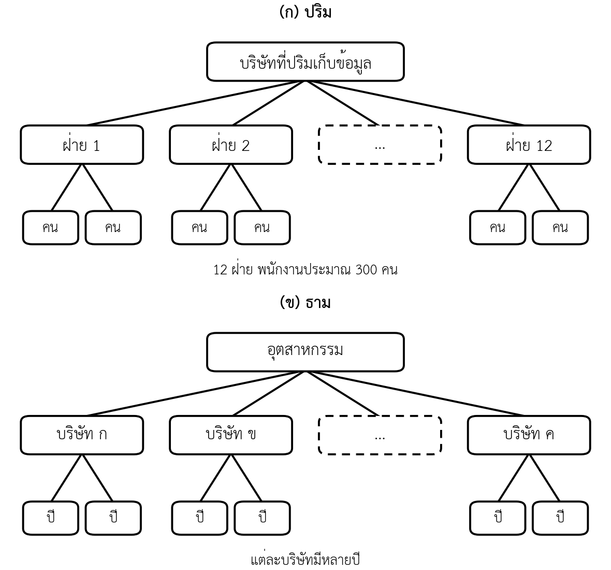
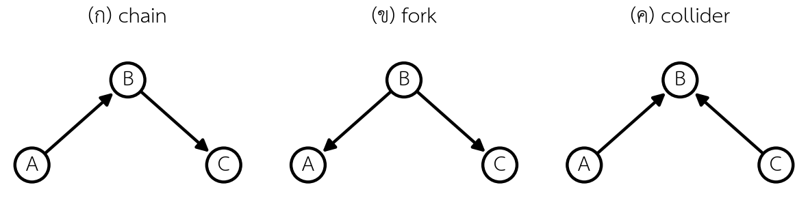
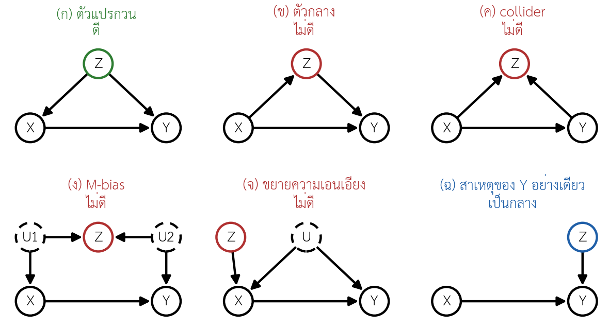
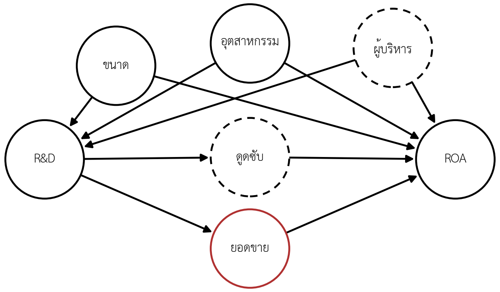
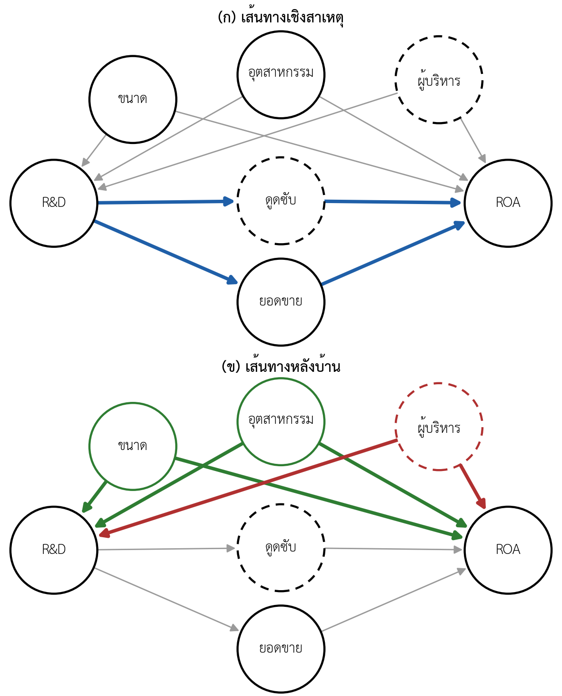
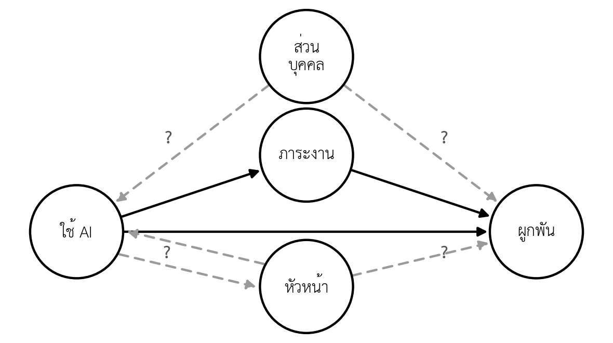

บทที่ 2 จากคำถามวิจัยสู่ตัวแปร หน่วยวิเคราะห์ และแผนภาพเชิงสาเหตุ
เมื่อศึกษาบทนี้จบแล้ว นิสิตสามารถ
- จำแนกคำถามวิจัยเชิงบรรยาย เชิงพยากรณ์ และเชิงสาเหตุ และระบุว่าคำถามของตนเป็นแบบใดได้
- แปลงคำถามวิจัยเป็นตัวแปรต้น ตัวแปรตาม นิยามเชิงปฏิบัติการ และหน่วยวิเคราะห์ได้
- อธิบายโครงสร้าง chain fork และ collider และผลของการควบคุมตัวแปรในแต่ละโครงสร้างได้
- จำแนกตัวแปรควบคุมในแบบจำลองของตนว่าเป็นตัวควบคุมที่ดี ไม่ดี หรือเป็นกลาง โดยใช้แผนภาพเชิงสาเหตุได้
- จัดทำแผนภาพเชิงสาเหตุของโครงการตนเองตามขั้นตอนสามขั้น และระบุตัวแปรที่ควรมีแต่วัดไม่ได้ได้ (ใบงานที่ 2)
ความนำ
บทที่ 1 วางแผนว่าข้อมูลจะมาจากไหนและจะดูแลอย่างไร บทนี้ย้อนกลับไปที่จุดตั้งต้นของงานวิจัย คือคำถามวิจัย และถามต่อว่าคำถามนั้นต้องการตัวแปรอะไร วัดที่หน่วยใด และต้องควบคุมตัวแปรใดจึงจะตอบคำถามได้ คำถามสุดท้ายนี้ดูเหมือนเป็นเรื่องเทคนิคของการวิเคราะห์ แต่ความจริงเป็นเรื่องของการออกแบบ เพราะตัวแปรควบคุม (control variable) ที่เลือกผิดทำให้ผลการวิเคราะห์ห่างจากคำตอบที่ต้องการ ไม่ว่ากลุ่มตัวอย่างจะใหญ่เพียงใด
ในงานวิจัยบริหารธุรกิจ นิสิตจำนวนมากเลือกตัวแปรควบคุมด้วยการคัดลอกจากงานก่อนหน้า หรือใส่ทุกตัวแปรที่มีในข้อมูล ด้วยความเชื่อว่าใส่มากยิ่งดี บทนี้แสดงว่าความเชื่อนี้ไม่ถูกต้อง และเสนอเครื่องมือที่ช่วยตัดสินใจอย่างมีเหตุผล คือ แผนภาพเชิงสาเหตุ (causal diagram) ซึ่งเขียนในรูปกราฟมีทิศทางที่ไม่มีวงวน (directed acyclic graph หรือ DAG)
บทนี้เริ่มจากการจำแนกประเภทของคำถามวิจัย แล้วแปลงคำถามเป็นตัวแปร นิยามเชิงปฏิบัติการ และหน่วยวิเคราะห์ จากนั้นอธิบายองค์ประกอบของแผนภาพเชิงสาเหตุ ใช้แผนภาพจำแนกตัวแปรควบคุมที่ดีและไม่ดี เสนอขั้นตอนสร้างแผนภาพสามขั้น และกล่าวถึงกรณีที่มีตัวแปรกวนซึ่งวัดไม่ได้ ท้ายบทเป็นกรณีศึกษาเดินเรื่อง (running case) ของปริมและธามต่อจากบทที่ 1 ทั้งสองเป็นนิสิตสมมติที่ผู้เขียนใช้เป็นตัวอย่างตลอดเล่ม ปริมเป็นนิสิตปริญญาโท ศึกษาการใช้เครื่องมือ AI กับความผูกพันในงานของพนักงานสำนักงาน และเก็บข้อมูลปฐมภูมิด้วยแบบสอบถาม ส่วนธามเป็นนิสิตปริญญาเอก ศึกษาการลงทุนวิจัยและพัฒนากับผลการดำเนินงานของบริษัทจดทะเบียน และใช้ข้อมูลทุติยภูมิจากงบการเงิน
2.1 จากหัวข้อสู่คำถามวิจัย
หัวข้อวิจัยบอกว่านิสิตสนใจเรื่องใด แต่ยังไม่บอกว่าต้องการรู้อะไร หัวข้อ "การใช้เครื่องมือ AI กับความผูกพันในงาน (work engagement)" อาจกลายเป็นคำถามได้หลายแบบ เช่น พนักงานใช้เครื่องมือ AI มากน้อยเพียงใด การใช้เครื่องมือ AI ช่วยทำนายว่าใครจะผูกพันในงานสูงได้หรือไม่ หรือการใช้เครื่องมือ AI ทำให้ความผูกพันในงานสูงขึ้นหรือไม่ คำถามสามแบบนี้ต้องการข้อมูล ตัวแปร และวิธีวิเคราะห์ต่างกัน
2.1.1 คำถามสามแบบ
ผู้เขียนเสนอให้นิสิตจำแนกคำถามของตนก่อนเป็นสามแบบตามตารางที่ 2.1 การจำแนกนี้สำคัญเพราะเครื่องมือในบทนี้ ได้แก่ แผนภาพเชิงสาเหตุและการเลือกตัวแปรควบคุม จำเป็นสำหรับคำถามเชิงสาเหตุ สำหรับคำถามเชิงบรรยายและเชิงพยากรณ์ การเลือกตัวแปรใช้เหตุผลอื่น
ตารางที่ 2.1 ประเภทของคำถามวิจัย
| ประเภท | ตัวอย่างคำถาม | สิ่งที่ต้องการรู้ | บทบาทของตัวแปรควบคุม |
|---|---|---|---|
| เชิงบรรยาย (descriptive) | พนักงานสำนักงานใช้เครื่องมือ AI ในงานบ่อยเพียงใด | ลักษณะหรือระดับของปรากฏการณ์ | ใช้แยกกลุ่มย่อยเพื่อบรรยาย ไม่ได้ใช้ตัดอิทธิพล |
| เชิงพยากรณ์ (predictive) | การใช้เครื่องมือ AI ช่วยทำนายความผูกพันในงานได้แม่นขึ้นหรือไม่ | ความแม่นของการทำนาย | ใส่ตัวแปรที่ช่วยทำนายได้ ไม่ต้องตีความค่าสัมประสิทธิ์เชิงสาเหตุ |
| เชิงสาเหตุ (causal) | การใช้เครื่องมือ AI ทำให้ความผูกพันในงานสูงขึ้นหรือไม่ | ผลของการเปลี่ยนตัวแปรต้นต่อตัวแปรตาม | ต้องเลือกจากโครงสร้างเชิงสาเหตุ ใส่ผิดตัวทำให้ผลเอนเอียง (biased) |
ที่มา ผู้เขียนสังเคราะห์
คำถามวิจัยทางบริหารธุรกิจส่วนใหญ่เป็นคำถามเชิงสาเหตุ แม้จะเขียนด้วยคำว่า "ความสัมพันธ์" หรือ "อิทธิพล" ถ้าข้อเสนอแนะท้ายงานบอกผู้บริหารว่า "ควรเพิ่มการใช้เครื่องมือ AI เพื่อเพิ่มความผูกพันในงาน" คำถามนั้นเป็นเชิงสาเหตุ เพราะข้อเสนอแนะสมมติว่าการเปลี่ยนตัวแปรต้นจะเปลี่ยนตัวแปรตาม ปัญหาคือข้อมูลที่นิสิตมีส่วนใหญ่เป็นข้อมูลเชิงสังเกต (observational data) ซึ่งไม่ได้สุ่มให้ใครได้รับปัจจัย (treatment) Rohrer (2018, บทคัดย่อ) ชี้ว่าความสัมพันธ์ไม่ได้บอกความเป็นเหตุเป็นผล แต่หลายครั้งข้อมูลเชิงสังเกตเป็นทางเลือกเดียว แม้คำถามวิจัยจะเกี่ยวกับความเป็นเหตุเป็นผลก็ตาม ผู้วิจัยจึงต้องคิดอย่างชัดเจนว่าตัวแปรใดเกี่ยวข้องกันอย่างไร
2.1.2 คำถามที่ดีมาจากทฤษฎี ไม่ใช่จากข้อมูล
ผู้เขียนเสนอว่า คำถามวิจัยต้องมาก่อนการดูข้อมูล และควรมาจากช่องว่างหรือข้อสมมติในวรรณกรรม ไม่ใช่จากตัวแปรที่บังเอิญมีในชุดข้อมูล Alvesson และ Sandberg (2011, บทคัดย่อ) ชี้ว่าวิธีที่ใช้กันมากคือการหาช่องว่างในวรรณกรรมเดิม (gap spotting) และเสนอวิธีที่เรียกว่าการตั้งคำถามต่อข้อสมมติ (problematization) คือระบุและท้าทายข้อสมมติที่วรรณกรรมเดิมยึดถือ แล้วสร้างคำถามวิจัยจากตรงนั้น นิสิตปริญญาเอกควรพิจารณาแนวทางนี้เมื่อต้องการให้งานมีส่วนสนับสนุนทางทฤษฎี (theoretical contribution) ที่ชัดเจน
2.2 ตัวแปรและนิยามเชิงปฏิบัติการ
เมื่อได้คำถามเชิงสาเหตุแล้ว ขั้นต่อไปคือระบุบทบาทของตัวแปร ตัวแปรต้น (treatment หรือ exposure) คือ ตัวแปรที่ผู้วิจัยต้องการรู้ผลของมัน ตัวแปรตาม (outcome) คือ ตัวแปรที่ผู้วิจัยต้องการรู้ว่าเปลี่ยนไปเท่าใดเมื่อตัวแปรต้นเปลี่ยน ตัวกลาง (mediator) คือ ตัวแปรที่อยู่บนเส้นทางที่ตัวแปรต้นส่งผลไปถึงตัวแปรตาม และ ตัวแปรกวน (confounder) คือ ตัวแปรที่เป็นสาเหตุร่วม (common cause) ของตัวแปรต้นและตัวแปรตาม ซึ่งทำให้ทั้งสองสัมพันธ์กันแม้ตัวแปรต้นไม่มีผลต่อตัวแปรตามเลย (Hünermund et al., 2025, p. 3)
2.2.1 นิยามเชิงแนวคิดและนิยามเชิงปฏิบัติการ
ตัวแปรต้นและตัวแปรตามแต่ละตัวต้องมีนิยามสองระดับ นิยามเชิงแนวคิด (conceptual definition) บอกว่าแนวคิดนั้นหมายถึงอะไรในทางทฤษฎี ส่วน นิยามเชิงปฏิบัติการ (operational definition) บอกว่าจะวัดแนวคิดนั้นอย่างไรในการวิจัยนี้ ตัวอย่างเช่น "ความผูกพันในงาน" มีนิยามเชิงแนวคิดตามทฤษฎีที่นิสิตเลือก และมีนิยามเชิงปฏิบัติการเป็นคะแนนจากมาตรวัด (scale) ฉบับใดฉบับหนึ่ง
สำหรับข้อมูลปฐมภูมิ (primary data) การกำหนดนิยามเชิงแนวคิดให้ชัดเป็นขั้นแรกของการพัฒนามาตรวัด Boateng และคณะ (2018, p. 3) วางขั้นแรกของกระบวนการพัฒนามาตรวัดไว้ที่การกำหนดขอบเขตของแนวคิดและสร้างข้อคำถาม (item) ก่อนการตรวจความเที่ยงตรงเชิงเนื้อหา (content validity) ถ้านิยามเชิงแนวคิดไม่ชัด ข้อคำถามที่ได้จะวัดหลายเรื่องปนกัน รายละเอียดของการพัฒนามาตรวัดอยู่ในบทของแทร็ก A
สำหรับข้อมูลทุติยภูมิ (secondary data) นิยามเชิงปฏิบัติการถูกกำหนดไว้แล้วโดยผู้ผลิตข้อมูล ผู้วิจัยจึงต้องตรวจว่าตัวแปรที่มีวัดแนวคิดที่ต้องการได้จริงหรือไม่ ตามที่บทที่ 1 กล่าวไว้ ตัวแทนจากข้อมูลเอกสาร (archival proxy) บางตัวถูกใช้แทนแนวคิดที่หลากหลาย และบางกรณีไม่ได้สัมพันธ์ใกล้ชิดกับแนวคิดที่ตั้งใจวัด (Ketchen et al., 2013, บทคัดย่อ) ผู้เขียนเสนอให้นิสิตเขียนนิยามเชิงแนวคิดก่อน แล้วจึงเขียนว่าตัวแปรในข้อมูลวัดแนวคิดนั้นได้ครบเพียงใด และส่วนใดที่วัดไม่ได้
2.2.2 ตารางคำถามสู่ตัวแปร
ผู้เขียนเสนอแม่แบบในตารางที่ 2.2 ให้นิสิตเติมก่อนวาดแผนภาพเชิงสาเหตุ คอลัมน์ที่ 2 และ 3 เป็นตัวอย่างที่เติมแล้วจากกรณีศึกษาเดินเรื่อง คอลัมน์ปริมคือโครงการระดับปริญญาโทที่ใช้แบบสอบถาม คอลัมน์ธามคือโครงการระดับปริญญาเอกที่ใช้ข้อมูลงบการเงิน นิสิตใช้คอลัมน์แรกเป็นแม่แบบและเติมข้อมูลของโครงการตนเองแทนคอลัมน์ตัวอย่าง
ตารางที่ 2.2 แม่แบบตารางคำถามสู่ตัวแปร พร้อมตัวอย่างจากกรณีศึกษา
| รายการ | ปริม (ปริญญาโท ข้อมูลแบบสอบถาม) | ธาม (ปริญญาเอก ข้อมูลงบการเงิน) |
|---|---|---|
| ประเภทคำถาม (question type) | เชิงสาเหตุ | เชิงสาเหตุ |
| ตัวแปรต้น (treatment) | การใช้เครื่องมือ AI ในงานประจำวัน (AI tool use) | ความเข้มข้นของการลงทุนวิจัยและพัฒนา (R&D intensity) |
| นิยามเชิงปฏิบัติการ (operational definition) ของตัวแปรต้น | คะแนนความถี่ของการใช้จากแบบสอบถาม | ค่าใช้จ่ายวิจัยและพัฒนาต่อยอดขาย (R&D expenditure to sales) จากงบการเงิน |
| ตัวแปรตาม (outcome) | ความผูกพันในงาน (work engagement) | ผลการดำเนินงาน (firm performance) |
| นิยามเชิงปฏิบัติการของตัวแปรตาม | คะแนนจากมาตรวัดความผูกพันในงาน | ผลตอบแทนต่อสินทรัพย์ (ROA) |
| หน่วยวิเคราะห์ (unit of analysis) | พนักงาน (employee) | บริษัทรายปี (firm-year) |
| ประชากรและช่วงเวลา (population and period) | พนักงานสำนักงานของบริษัทหนึ่ง ปีเดียว | บริษัทจดทะเบียน หลายปี |
| ตัวแปรที่ระดับสูงกว่า (higher-level variable) | ฝ่ายที่สังกัด (department) | อุตสาหกรรม (industry) |
ที่มา ผู้เขียนสังเคราะห์ ข้อมูลกรณีศึกษาเป็นข้อมูลสมมติ
2.3 หน่วยวิเคราะห์และระดับของการวิเคราะห์
หน่วยวิเคราะห์ (unit of analysis) คือ สิ่งที่ข้อสรุปของงานวิจัยกล่าวถึง เช่น บุคคล ทีม ฝ่าย บริษัท หรือบริษัทในแต่ละปี หน่วยวิเคราะห์ต่างจากผู้ให้ข้อมูล เช่น งานที่ให้ผู้จัดการตอบแบบสอบถามเรื่องกลยุทธ์ของบริษัท มีผู้ให้ข้อมูลเป็นบุคคล แต่หน่วยวิเคราะห์เป็นบริษัท
2.3.1 ข้อสมมติเรื่องระดับ
งานวิจัยองค์การมักมีหน่วยซ้อนกัน พนักงานอยู่ในฝ่าย ฝ่ายอยู่ในบริษัท บริษัทอยู่ในอุตสาหกรรม Klein และคณะ (1994, บทคัดย่อ) ชี้ว่าทฤษฎีที่ระบุระดับต้องตั้งข้อสมมติอย่างใดอย่างหนึ่งในสามแบบ แบบแรก สมาชิกในหน่วยระดับสูงเหมือนกัน แบบที่สอง สมาชิกเป็นอิสระจากหน่วยระดับสูง และแบบที่สาม สมาชิกแตกต่างกันภายในหน่วยระดับสูง ข้อสมมติที่เลือกควรกำหนดการเก็บข้อมูล การวิเคราะห์ และการตีความด้วย
2.3.2 ตัวแปรต้นและตัวแปรตามอยู่ระดับเดียวกันหรือไม่
ผู้เขียนเสนอจุดตรวจหนึ่งข้อ คือหน่วยวิเคราะห์ของตัวแปรต้นและตัวแปรตามต้องตรงกัน หรือมีแผนชัดเจนว่าจะเชื่อมระดับอย่างไร ในกรณีของปริม การใช้เครื่องมือ AI วัดที่ระดับพนักงาน แต่บริษัทให้แต่ละฝ่ายตัดสินใจเองว่าจะเปิดให้ใช้เครื่องมือ AI หรือไม่ การได้ใช้เครื่องมือจึงถูกกำหนดบางส่วนที่ระดับฝ่าย ถ้าบรรยากาศของฝ่ายส่งผลต่อความผูกพันในงานด้วย ฝ่ายจะเป็นตัวแปรกวน (confounder) ที่ระดับสูงกว่า ปริมต้องตัดสินว่าข้อสรุปของตนกล่าวถึงพนักงานหรือฝ่าย และวางแผนการวิเคราะห์ที่คำนึงถึงการที่พนักงานซ้อนอยู่ในฝ่าย รายละเอียดของการวิเคราะห์หลายระดับ (multilevel analysis) อยู่นอกขอบเขตของบทนี้
ในกรณีของธาม หน่วยวิเคราะห์คือบริษัทรายปี ทั้งการลงทุนวิจัยและพัฒนาและ ROA วัดที่ระดับเดียวกัน แต่บริษัทซ้อนอยู่ในอุตสาหกรรม และแต่ละบริษัทมีหลายปี ธามต้องระบุว่าคำถามสนใจความต่างระหว่างบริษัท (between-firm difference) หรือการเปลี่ยนแปลงภายในบริษัทเดียวกัน (within-firm change) เมื่อเวลาผ่านไป เพราะสองคำถามนี้ใช้การวิเคราะห์ต่างกัน
ภาพที่ 2.1 เปรียบเทียบการซ้อนของหน่วยในสองกรณี ในกรณีของปริม พนักงานซ้อนอยู่ใน 12 ฝ่าย และการเปิดใช้เครื่องมือ AI ถูกตัดสินที่ระดับฝ่าย ในกรณีของธาม ข้อมูลแต่ละแถวคือบริษัทในปีหนึ่ง แต่ละบริษัทมีหลายปี และบริษัทซ้อนอยู่ในอุตสาหกรรม

ที่มา ผู้เขียนวาดจากกรณีศึกษาสมมติ แสดงเพียงบางหน่วย กล่องเส้นประแทนหน่วยที่ไม่ได้แสดง
2.4 แผนภาพเชิงสาเหตุ
แผนภาพเชิงสาเหตุ (causal diagram) คือ แผนภาพที่แสดงลักษณะเชิงคุณภาพของกระบวนการที่สร้างข้อมูล (data-generating process) ตัวอักษรหรือกล่องแทนตัวแปร และลูกศรจากตัวแปรหนึ่งไปอีกตัวหนึ่งแทนผลทางตรงที่อาจมีของตัวแปรแรกต่อตัวแปรที่สอง แผนภาพไม่ต้องกำหนดรูปแบบฟังก์ชัน (functional form) ของความสัมพันธ์หรือการแจกแจงของตัวแปร (Cinelli et al., 2024, p. 3) แผนภาพจึงเป็นเครื่องมือของทฤษฎี ไม่ใช่แบบจำลองทางสถิติ (statistical model) Hünermund และคณะ (2025, p. 4) อธิบายว่าแบบจำลองเชิงสาเหตุเชิงโครงสร้าง (structural causal model) เป็นเครื่องมือแสดงข้อสมมติเชิงสาเหตุที่แบบจำลองทางสถิติ เช่น สมการถดถอย (regression equation) ตั้งอยู่ ไม่ใช่ตัวแบบจำลองทางสถิติเอง
เลขหน้าของ Cinelli และคณะ (2024) ในบทนี้อ้างตามฉบับก่อนตีพิมพ์ (Technical Report R-493 ฉบับปรับปรุงมีนาคม 2022) ซึ่งเลขหน้าต่างจากฉบับวารสาร
2.4.1 การระบุผลกับการประมาณค่า
ก่อนใช้แผนภาพ นิสิตต้องแยกสองเรื่องออกจากกัน การระบุผลเชิงสาเหตุ (causal identification) ถามว่าแบบการวิจัยและข้อมูลรองรับการอนุมานเชิงสาเหตุได้หรือไม่ ส่วนการประมาณค่า (estimation) และการอนุมานทางสถิติ (statistical inference) ถามว่าจะได้ค่าประมาณที่แม่นเพียงใด Hünermund และคณะ (2025, p. 3) ชี้ว่าการระบุผลเป็นคนละเรื่องกับการประมาณค่า และไม่ขึ้นกับขนาดตัวอย่าง ความหมายในทางปฏิบัติคือ ถ้าเลือกตัวแปรควบคุมผิด การเพิ่มกลุ่มตัวอย่างไม่ได้ช่วยให้ได้คำตอบที่ถูก
2.4.2 โครงสร้างพื้นฐานสามแบบ
แผนภาพเชิงสาเหตุทุกแผนประกอบด้วยโครงสร้างพื้นฐานสามแบบตามภาพที่ 2.2 (Hünermund et al., 2025, p. 3)

ที่มา ผู้เขียนวาดตามคำอธิบายของ Hünermund และคณะ (2025, p. 3)
ในโครงสร้าง chain ตัวแปร A ส่งผลต่อ B และ B ส่งผลต่อ C ในโครงสร้าง fork ตัวแปร B เป็นสาเหตุร่วมของ A และ C ในทั้งสองโครงสร้าง A และ C สัมพันธ์กันทางสถิติ และความสัมพันธ์นั้นหายไปเมื่อควบคุม B (Hünermund et al., 2025, p. 3) ความต่างอยู่ที่ความหมาย ใน chain การควบคุม B ปิดกลไกที่ A ส่งผลต่อ C Hünermund และคณะ (2025, p. 3) ยกตัวอย่างว่า ถ้าการลงทุนเชิงกลยุทธ์ส่งผลต่อผลการดำเนินงานผ่านยอดขายเท่านั้น ในกลุ่มตัวอย่างที่ทุกบริษัทมียอดขายเท่ากัน การลงทุนจะไม่สัมพันธ์กับผลการดำเนินงานเลย ส่วนใน fork การควบคุม B ตัดความสัมพันธ์ลวง (spurious association) ที่เกิดจากสาเหตุร่วม
โครงสร้าง collider ตรงข้ามกับสองแบบแรก A และ C ต่างส่งผลต่อ B โดยที่ A กับ C ไม่ได้สัมพันธ์กัน แต่เมื่อควบคุม B หรือเลือกกลุ่มตัวอย่างตามค่าของ B ความสัมพันธ์ลวงระหว่าง A กับ C จะเกิดขึ้น ตัวอย่างที่ Cinelli และคณะ (2024, p. 12) ยกไว้ คือการศึกษาที่ใช้เฉพาะข้อมูลทหาร ถ้าคนตัวเตี้ยมีแนวโน้มสมัครเป็นทหารมากกว่า การจำกัดตัวอย่างเฉพาะผู้ที่เป็นทหารก็เท่ากับควบคุม collider และทำให้เกิดความเอนเอียงจากการเลือกตัวอย่าง (selection bias)
ตารางที่ 2.3 ผลของการควบคุมตัวแปรกลางในโครงสร้างพื้นฐานสามแบบ
| โครงสร้าง | ความหมาย | ถ้าไม่ควบคุม B | ถ้าควบคุม B |
|---|---|---|---|
| chain | B เป็นตัวกลางที่ A ส่งผลผ่านไปถึง C | เห็นผลรวม (total effect) ของ A ต่อ C | ปิดกลไก เห็นผลน้อยลงหรือไม่เห็นผล |
| fork | B เป็นสาเหตุร่วมของ A และ C | มีความสัมพันธ์ลวง | ตัดความสัมพันธ์ลวง |
| collider | B เป็นผลร่วมของ A และ C | เส้นทางปิดอยู่แล้ว | เปิดความสัมพันธ์ลวงขึ้นมาใหม่ |
ที่มา ผู้เขียนสรุปจาก Hünermund และคณะ (2025, p. 3) และ Cinelli และคณะ (2024, pp. 3–4)
2.4.3 เส้นทางหลังบ้านและเกณฑ์หลังบ้าน
ระหว่างตัวแปรต้นกับตัวแปรตามอาจมีหลายเส้นทาง บางเส้นทางเป็นเส้นทางเชิงสาเหตุ (causal path) คือเริ่มจากตัวแปรต้นและไปตามลูกศรจนถึงตัวแปรตาม บางเส้นทางเป็นเส้นทางลวง (non-causal path) เส้นทางลวงที่เริ่มด้วยลูกศรที่ชี้เข้าหาตัวแปรต้น เรียกว่า เส้นทางหลังบ้าน (backdoor path) หลักชี้นำในการเลือกตัวแปรควบคุมมีเพียงข้อเดียว คือต้องปิดเส้นทางลวงทั้งหมดระหว่างตัวแปรต้นกับตัวแปรตาม และต้องไม่รบกวนเส้นทางเชิงสาเหตุใด ๆ (Cinelli et al., 2024, p. 4)
หลักนี้เขียนเป็นเกณฑ์ที่ตรวจได้ เรียกว่า เกณฑ์หลังบ้าน (backdoor criterion) ชุดตัวแปรควบคุมผ่านเกณฑ์นี้เมื่อไม่มีตัวแปรใดในชุดเป็นผลที่สืบมาจากตัวแปรต้น (descendant of the treatment) และชุดนั้นปิดทุกเส้นทางที่มีลูกศรชี้เข้าหาตัวแปรต้น (Hünermund et al., 2025, p. 7) เมื่อชุดตัวแปรควบคุมผ่านเกณฑ์นี้ การควบคุมด้วยการถดถอยพหุคูณ (multiple regression) การจับคู่ด้วยคะแนนความโน้มเอียง (propensity score matching) หรือวิธีอื่นที่ทำหน้าที่ควบคุม จะประมาณผลเชิงสาเหตุได้อย่างสอดคล้อง (consistent) (Hünermund et al., 2025, p. 7)
การควบคุมไม่ได้หมายถึงการใส่ตัวแปรในสมการถดถอยเท่านั้น Hünermund และคณะ (2025, p. 2) ชี้ว่าการควบคุมทำได้ทั้งการปรับทางสถิติ (statistical adjustment) และการเลือกกลุ่มตัวอย่างให้ตัวแปรนั้นคงที่ เช่น ศึกษาเพียงอุตสาหกรรมเดียว ข้อนี้สำคัญเพราะการกำหนดเกณฑ์คัดเลือกกลุ่มตัวอย่างก็เป็นการควบคุมเช่นกัน และอาจเป็นการควบคุม collider โดยไม่รู้ตัว
2.5 ตัวแปรควบคุมที่ดี ไม่ดี และเป็นกลาง
ตำราสถิติที่ใช้กันแพร่หลายพูดถึงปัญหาการละตัวแปรที่เกี่ยวข้อง (omitted variable bias) แต่ไม่บอกว่าตัวแปรใดเกี่ยวข้อง หรือตัวแปรใดที่ใส่แล้วทำให้ความเอนเอียงเกิดขึ้นหรือแย่ลง ผู้อ่านจึงอาจเข้าใจว่าการใส่ตัวแปรควบคุมมากขึ้นดีกว่าเสมอ (Cinelli et al., 2024, p. 2) งานทบทวนในวารสารการจัดการพบปัญหาในทางปฏิบัติที่สอดคล้องกัน Becker (2005, บทคัดย่อ) ศึกษาบทความ 60 เรื่องจากวารสารชั้นนำสี่ฉบับ และพบว่าผู้เขียนจำนวนมากไม่อธิบายเหตุผลที่ใส่ตัวแปรควบคุม บรรยายการวัดไม่ชัด และรายงานผลไม่ครบ Spector และ Brannick (2011, บทคัดย่อ) เรียกการใส่ตัวแปรควบคุมแบบอัตโนมัติว่าเป็นตำนานเชิงวิธีการ (methodological urban legend) และเสนอให้ผู้วิจัยระบุบทบาทของตัวแปรควบคุมอย่างชัดแจ้ง
2.5.1 ตัวควบคุมสามกลุ่ม
Cinelli และคณะ (2024, pp. 4–13) ใช้แบบจำลองตัวอย่าง 18 แบบจำแนกตัวแปรควบคุมเป็นสามกลุ่ม ตัวควบคุมที่ดี (good control) ลดความเอนเอียง ตัวควบคุมไม่ดี (bad control) เพิ่มความเอนเอียง และ ตัวควบคุมที่เป็นกลาง (neutral control) ไม่เพิ่มและไม่ลดความเอนเอียง แต่อาจทำให้ค่าประมาณแม่นขึ้นหรือแม่นน้อยลง ซึ่งเป็นเรื่องของความแม่นยำ (precision) ตารางที่ 2.4 สรุปกรณีที่นิสิตพบบ่อย
ตารางที่ 2.4 ตัวแปรควบคุมที่ดี ไม่ดี และเป็นกลาง
| ตำแหน่งของตัวแปร Z ในแผนภาพ | กลุ่ม | ผลของการควบคุม Z | แหล่ง |
|---|---|---|---|
| สาเหตุร่วมของตัวแปรต้นและตัวแปรตาม | ดี | ปิดเส้นทางหลังบ้าน | Cinelli et al. (2024, pp. 4–5) |
| อยู่บนเส้นทางหลังบ้านแม้ไม่ใช่สาเหตุร่วมโดยตรง | ดี | ปิดเส้นทางหลังบ้านที่ผ่านตัวแปรที่วัดไม่ได้ | Cinelli et al. (2024, p. 5) |
| ตัวกลางระหว่างตัวแปรต้นกับตัวแปรตาม | ไม่ดี | ปิดผลที่ต้องการประมาณ เรียกว่าความเอนเอียงจากการควบคุมเกิน (overcontrol bias) | Cinelli et al. (2024, p. 8) |
| ผลร่วมของตัวแปรต้นกับตัวแปรตาม หรือผลของตัวแปรตาม | ไม่ดี | เปิดเส้นทางลวง ทำให้เกิดความเอนเอียงจากการเลือก | Cinelli et al. (2024, p. 10) |
| ตัวแปรก่อนการได้รับปัจจัย (pre-treatment variable) ที่เป็น collider ของตัวแปรที่วัดไม่ได้สองตัว | ไม่ดี | เปิดเส้นทางลวง เรียกว่า M-bias | Cinelli et al. (2024, p. 5) |
| สาเหตุของตัวแปรต้นเท่านั้น เมื่อมีตัวแปรกวนที่วัดไม่ได้ | ไม่ดี | ขยายความเอนเอียงที่มีอยู่เดิม (bias amplification) | Cinelli et al. (2024, p. 7) |
| สาเหตุของตัวแปรตามเท่านั้น | เป็นกลาง | ความเอนเอียงไม่เปลี่ยน ค่าประมาณอาจแม่นขึ้น | Cinelli et al. (2024, p. 6) |
| สาเหตุของตัวแปรต้นเท่านั้น เมื่อไม่มีตัวแปรกวนที่วัดไม่ได้ | เป็นกลาง | ความเอนเอียงไม่เปลี่ยน ค่าประมาณอาจแม่นน้อยลง | Cinelli et al. (2024, p. 7) |
ที่มา ผู้เขียนสรุปจาก Cinelli และคณะ (2024) ฉบับก่อนตีพิมพ์
ภาพที่ 2.3 แสดงแผนภาพของหกกรณีที่พบบ่อยในตารางที่ 2.4 ในทุกช่อง X คือตัวแปรต้น Y คือตัวแปรตาม และ Z คือตัวแปรที่กำลังพิจารณาว่าจะควบคุมหรือไม่ สีของ Z บอกกลุ่ม สีเขียวคือตัวควบคุมที่ดี สีแดงคือตัวควบคุมไม่ดี และสีน้ำเงินคือตัวควบคุมที่เป็นกลาง ช่อง (ก) กับช่อง (จ) แสดงว่าตัวแปรที่ชี้ลูกศรเข้าหา X เหมือนกัน อาจเป็นตัวควบคุมที่ดีหรือไม่ดีก็ได้ ขึ้นกับว่าส่งผลต่อ Y ด้วยหรือไม่ และมีตัวแปรกวนที่วัดไม่ได้หรือไม่

ที่มา ผู้เขียนวาดตามแบบจำลองของ Cinelli และคณะ (2024, pp. 4–8, 10) วงกลมเส้นประคือตัวแปรที่วัดไม่ได้
2.5.2 บทเรียนสามข้อจากตารางที่ 2.4
บทเรียนแรก ตัวแปรที่เกิดก่อนตัวแปรต้นไม่ได้เป็นตัวควบคุมที่ดีเสมอ ตำราเศรษฐมิติ (econometrics) มักถือว่าตัวแปรก่อนการได้รับปัจจัยเป็นตัวควบคุมที่ดี แต่ M-bias แสดงว่าตัวแปรก่อนการได้รับปัจจัยก็เป็นตัวควบคุมไม่ดีได้ (Cinelli et al., 2024, p. 5) และตัวแปรที่เป็นสาเหตุของตัวแปรต้นเพียงอย่างเดียวอาจขยายความเอนเอียงที่มีอยู่ (Cinelli et al., 2024, p. 7)
บทเรียนที่สอง ตัวกลางเป็นตัวควบคุมไม่ดีเมื่อคำถามสนใจผลรวม ถ้าเป้าหมายคือผลทั้งหมดของตัวแปรต้นต่อตัวแปรตาม ต้องปล่อยทุกช่องทางที่ผลไหลผ่านไว้โดยไม่แตะต้อง การควบคุมตัวกลางปิดผลที่ต้องการประมาณเอง (Cinelli et al., 2024, p. 8) Hünermund และคณะ (2025, p. 10) แสดงด้วยข้อมูลจำลองว่า เมื่อสร้างข้อมูลให้รูปลักษณ์ของ CEO ส่งผลต่อ ROA ผ่านยอดขาย การควบคุมยอดขายทำให้ไม่พบผล แต่เมื่อตัดยอดขายออกจากตัวควบคุม ค่าสัมประสิทธิ์มีขนาดใหญ่และมีนัยสำคัญสูง
บทเรียนที่สาม ตัวแปรที่เกิดหลังตัวแปรต้นไม่ได้เป็นตัวควบคุมไม่ดีเสมอ Cinelli และคณะ (2024, p. 9) ชี้ว่าในบางโครงสร้าง การควบคุมตัวแปรหลังการได้รับปัจจัย (post-treatment variable) ไม่เปิดเส้นทางลวงใด ๆ จึงเป็นกลางในแง่ความเอนเอียง สิ่งที่ตัดสินจึงไม่ใช่ลำดับเวลาอย่างเดียว แต่เป็นตำแหน่งของตัวแปรในแผนภาพ
ผู้เขียนเสนอว่า บทเรียนทั้งสามข้อนำไปสู่ข้อสรุปเดียวกัน คือไม่มีกฎง่าย ๆ เช่น "ใส่ตัวแปรประชากรศาสตร์ทุกตัว" หรือ "ใส่ทุกตัวแปรที่เกิดก่อน" ที่ใช้แทนการวาดแผนภาพได้ Spector และ Brannick (2011, บทคัดย่อ) ยังเตือนให้หลีกเลี่ยงการใช้ตัวแปรประชากรศาสตร์เป็นตัวแทนของตัวแปรที่สนใจจริงทางทฤษฎี
2.6 ขั้นตอนสร้างแผนภาพเชิงสาเหตุ
Hünermund และคณะ (2025, p. 8) เสนอขั้นตอนสามขั้นในการวาดแผนภาพเชิงสาเหตุ ตารางที่ 2.5 สรุปแต่ละขั้นพร้อมจุดตรวจที่ผู้เขียนเพิ่มสำหรับนิสิต
ตารางที่ 2.5 ขั้นตอนสร้างแผนภาพเชิงสาเหตุสามขั้น
| ขั้น | สิ่งที่ทำ | แหล่งของเหตุผล | จุดตรวจสำหรับนิสิต (ผู้เขียนเพิ่ม) |
|---|---|---|---|
| 1 ทำรายการกว้าง (long list) | รวบรวมตัวแปรที่งานก่อนหน้าใช้ และตัวแปรที่ผู้วิจัยคิดว่าเกี่ยวข้อง | วรรณกรรม และความเข้าใจของผู้วิจัย เพราะงานก่อนหน้าอาจละตัวแปรสำคัญ (p. 8) | ทุกตัวแปรมีแหล่งอ้างอิงหรือเหตุผลกำกับ |
| 2 คัดเป็นรายการสั้น (shortlist) | เลือกตัวแปรที่เกี่ยวข้องกับทั้งตัวแปรต้นและตัวแปรตาม | ความหนักแน่นของเหตุผลทางทฤษฎี และหลักฐานเชิงประจักษ์ในงานก่อนหน้า (p. 9) | ตัวแปรที่ถูกตัดออกบันทึกเหตุผลไว้ |
| 3 ระบุความสัมพันธ์ (relationships) | วาดลูกศรระหว่างตัวแปรในรายการสั้น | ทฤษฎี การไม่วาดลูกศรเป็นข้อสมมติที่หนักกว่าการวาด (p. 9) | ทุกลูกศรและทุกการไม่วาดลูกศรมีเหตุผล |
ที่มา คอลัมน์ที่ 1 ถึง 3 สรุปจาก Hünermund และคณะ (2025, pp. 8–9) คอลัมน์ที่ 4 ผู้เขียนเพิ่ม
2.6.1 วาดแผนภาพโดยไม่ขึ้นกับข้อมูล
Hünermund และคณะ (2025, p. 8) เน้นว่าการวาดแผนภาพเป็นงานเชิงแนวคิดที่แยกจากการมีข้อมูล แม้ตัวแปรควบคุมที่เกี่ยวข้องจะวัดไม่ได้ ก็ต้องบันทึกไว้ในแผนภาพ เพราะช่วยให้ผู้อ่านประเมินความน่าเชื่อถือของงาน ใช้ในการวิเคราะห์ความไว (sensitivity analysis) และเป็นประโยชน์ต่องานในอนาคตที่อาจวัดตัวแปรนั้นได้ ในแผนภาพที่ใช้ในบทนี้ ตัวแปรที่วัดไม่ได้แสดงด้วยวงกลมเส้นประ
ข้อนี้เชื่อมกับบทที่ 1 โดยตรง ผังตัดสินใจเลือกแหล่งข้อมูลในตารางที่ 1.5 ถามว่าตัวแปรหลักทุกตัวมีในชุดข้อมูลหรือไม่ แผนภาพเชิงสาเหตุคือเครื่องมือที่บอกว่า "ตัวแปรหลักทุกตัว" มีอะไรบ้าง ถ้าแผนภาพชี้ว่ามีตัวแปรกวนสำคัญที่ข้อมูลไม่มี นิสิตต้องกลับไปทบทวนผังตัดสินใจในบทที่ 1
2.6.2 ใช้ตารางสหสัมพันธ์อย่างระมัดระวัง
Hünermund และคณะ (2025, p. 8) แนะนำให้ดูตารางสหสัมพันธ์ (correlation table) ประกอบได้ แต่ต้องระวัง ความสัมพันธ์ไม่ได้บอกความเป็นเหตุเป็นผล และการไม่มีความสัมพันธ์ก็ไม่ได้แปลว่าไม่มีผลเชิงสาเหตุ ค่าสหสัมพันธ์ที่ต่ำจึงไม่ใช่หลักฐานว่าตัวแปรไม่เกี่ยวข้องกัน เพราะงานอาจประมาณค่าสหสัมพันธ์ผิดได้จากหลายสาเหตุ เช่น การวัดที่อ่อน หรือกลุ่มตัวอย่างเล็กหรือเอนเอียง สำหรับนิสิตที่ใช้ข้อมูลทุติยภูมิ ผู้เขียนเสนอให้วาดแผนภาพก่อนเปิดดูตารางสหสัมพันธ์ และบันทึกในสมุดบันทึกการตัดสินใจ (decision log) ว่าเปลี่ยนแผนภาพเพราะเห็นอะไรในข้อมูล ตามหลักเรื่องความรู้เดิมเกี่ยวกับข้อมูลในบทที่ 1
2.6.3 แผนภาพตรวจกับข้อมูลได้บางส่วน
แผนภาพเชิงสาเหตุไม่ได้เป็นเพียงความเชื่อของผู้วิจัยที่ตรวจสอบไม่ได้ Hünermund และคณะ (2025, p. 10) อธิบายว่าแผนภาพบอกความเป็นอิสระแบบมีเงื่อนไข (conditional independence) ระหว่างตัวแปรบางคู่ ซึ่งนำไปตรวจกับข้อมูลได้ว่าสอดคล้องหรือไม่ การหาชุดตัวแปรควบคุมที่ผ่านเกณฑ์หลังบ้านทำด้วยอัลกอริทึมคอมพิวเตอร์ได้ และแผนภาพที่ซับซ้อนวาดและวิเคราะห์ด้วยคอมพิวเตอร์ได้ (Hünermund et al., 2025, pp. 7, 9) งานที่บทความอ้างถึงคือแพ็กเกจ dagitty ซึ่งมีทั้งแพ็กเกจในภาษา R และเว็บไซต์สำหรับวาดแผนภาพ
2.6.4 ตัวอย่าง แผนภาพของธาม
ภาพที่ 2.4 เป็นแผนภาพที่ผู้เขียนร่างจากสถานการณ์ของธามในกรณีศึกษาเดินเรื่อง ตัวแปรต้นคือความเข้มข้นของการลงทุนวิจัยและพัฒนา (R&D) ตัวแปรตามคือ ROA ขนาดบริษัท (firm size) และอุตสาหกรรม (industry) เป็นสาเหตุร่วม ยอดขาย (sales) เป็นตัวกลาง ความสามารถในการดูดซับความรู้ (absorptive capacity) เป็นตัวกลางที่วัดไม่ได้ และคุณภาพผู้บริหาร (management quality) เป็นตัวแปรกวนที่วัดไม่ได้

ที่มา ผู้เขียนร่างจากกรณีศึกษาสมมติ วงกลมเส้นประคือตัวแปรที่วัดไม่ได้ วงกลมสีแดงคือตัวแปรที่อยู่ในรายการควบคุมเดิมแต่ไม่ควรควบคุม
เมื่อใช้เกณฑ์หลังบ้านกับภาพที่ 2.4 จะได้ข้อสรุปสามข้อ ข้อแรก ขนาดบริษัทและอุตสาหกรรมเป็นตัวควบคุมที่ดี เพราะปิดเส้นทางหลังบ้านสองเส้น ข้อที่สอง ยอดขายเป็นตัวควบคุมไม่ดี เพราะเป็นตัวกลางที่การลงทุนวิจัยและพัฒนาส่งผลผ่านไปถึง ROA การควบคุมยอดขายจึงปิดผลส่วนหนึ่งที่ธามต้องการประมาณ ข้อที่สาม คุณภาพผู้บริหารเปิดเส้นทางหลังบ้านที่ปิดด้วยการควบคุมไม่ได้ เพราะวัดไม่ได้ ผลเชิงสาเหตุจึงระบุไม่ได้ด้วยตัวแปรควบคุมเพียงอย่างเดียว ซึ่งเป็นเรื่องของหัวข้อ 2.7 ส่วนอายุบริษัทและอัตราส่วนหนี้สินที่ธามวางแผนใส่ ยังไม่ได้อยู่ในแผนภาพ ธามต้องตัดสินว่าทั้งสองตัวอยู่ตำแหน่งใดก่อนตัดสินว่าจะควบคุมหรือไม่
ภาพที่ 2.5 แยกเส้นทางในแผนภาพของธามเป็นสองกลุ่ม ภาพ (ก) แสดงเส้นทางเชิงสาเหตุสองเส้นที่ธามต้องปล่อยไว้ คือเส้นที่ผ่านยอดขายและเส้นที่ผ่านความสามารถในการดูดซับความรู้ ภาพ (ข) แสดงเส้นทางหลังบ้านสามเส้น เส้นที่ผ่านขนาดบริษัทและเส้นที่ผ่านอุตสาหกรรมปิดได้ด้วยการควบคุม ส่วนเส้นที่ผ่านคุณภาพผู้บริหารปิดไม่ได้

ที่มา ผู้เขียนวาดจากภาพที่ 2.4 สีน้ำเงินคือเส้นทางเชิงสาเหตุ สีเขียวคือเส้นทางหลังบ้านที่ปิดได้ด้วยการควบคุม สีแดงคือเส้นทางหลังบ้านที่ปิดไม่ได้เพราะวัดตัวแปรไม่ได้
แผนภาพนี้เป็นตัวอย่างเพื่อการสอน ไม่ใช่แผนภาพที่ถูกต้องเพียงแบบเดียว นิสิตที่มีเหตุผลทางทฤษฎีต่างกันอาจวาดลูกศรต่างกันได้ สิ่งที่ต้องมีคือเหตุผลของทุกลูกศร
2.6.5 แบบฝึก แผนภาพร่างแรกของปริม
ภาพที่ 2.6 เป็นแผนภาพร่างแรกที่ผู้เขียนวาดตามความเชื่อของปริมในกรณีศึกษาเดินเรื่อง ปริมเชื่อว่าการใช้เครื่องมือ AI ลดภาระงาน และภาระงานที่ลดลงทำให้ผูกพันในงานมากขึ้น ลูกศรเส้นประสีเทาที่มีเครื่องหมายคำถามคือความสัมพันธ์ที่ปริมยังไม่มีเหตุผลทางทฤษฎีรองรับ ได้แก่ ทิศทางระหว่างการสนับสนุนจากหัวหน้ากับการใช้เครื่องมือ AI และผลของลักษณะส่วนบุคคล เช่น อายุ เพศ อายุงาน และตำแหน่ง ร่างนี้ยังไม่มีฝ่ายที่สังกัด นิสิตใช้ภาพนี้ประกอบการตอบคำถามชวนคิดในกล่องกรณีศึกษาท้ายหัวข้อ 2.8

ที่มา ผู้เขียนวาดจากกรณีศึกษาสมมติ ลูกศรเส้นประสีเทาคือความสัมพันธ์ที่ยังต้องการเหตุผลทางทฤษฎี
2.7 เมื่อมีตัวแปรกวนที่วัดไม่ได้
ในงานจริง ผลเชิงสาเหตุมักระบุไม่ได้จากโครงสร้างของแผนภาพเพียงอย่างเดียว เพราะมีตัวแปรกวนที่วัดไม่ได้ ในกรณีนี้ ถ้าไม่มีข้อสมมติเพิ่ม ผู้วิจัยมักบอกไม่ได้ว่าการใส่ตัวแปรควบคุมตัวหนึ่งจะลดหรือเพิ่มขนาดของความเอนเอียง (Cinelli et al., 2024, p. 13) ทางเลือกของนิสิตมีสองทาง
2.7.1 การวิเคราะห์ความไว
การวิเคราะห์ความไว (sensitivity analysis) ถามว่า ตัวแปรกวนที่วัดไม่ได้ต้องแรงเพียงใดจึงจะเปลี่ยนข้อสรุปของงาน Cinelli และคณะ (2024, p. 6) เสนอให้กำหนดขอบเขตที่เป็นไปได้ของความแรงของตัวแปรที่วัดไม่ได้ แล้วดูว่าผลเปลี่ยนเพียงใด Hünermund และคณะ (2025, p. 12) อธิบายว่าแนวทางของ Cinelli และ Hazlett กำหนดขอบเขตของผลโดยสมมติว่าตัวแปรกวนที่วัดไม่ได้แรงเป็นจำนวนเท่าของตัวแปรควบคุมที่วัดได้ตัวหนึ่ง ซึ่งผู้วิจัยใช้ความรู้ในสาขา (domain knowledge) ตัดสินได้ง่ายกว่าการระบุตัวเลขลอย ๆ บทความใช้แพ็กเกจ sensemakr ซึ่งมีให้ใช้ในภาษา R, Python และ Stata (Hünermund et al., 2025, p. 12)
ในกรณีของธาม การวิเคราะห์ความไวจะถามว่า ถ้าคุณภาพผู้บริหารแรงเท่ากับหรือมากกว่าขนาดบริษัทหลายเท่า ผลของการลงทุนวิจัยและพัฒนาต่อ ROA จะยังอยู่หรือไม่ คำตอบไม่ได้พิสูจน์ว่าไม่มีตัวแปรกวน แต่บอกผู้อ่านว่าข้อสรุปทนต่อตัวแปรกวนได้มากเพียงใด
2.7.2 กลยุทธ์การระบุผลแบบอื่น
ทางเลือกที่สองคือใช้แบบการวิจัย (research design) ที่รับมือกับตัวแปรที่วัดไม่ได้ Hünermund และคณะ (2025, p. 5) ระบุตัวอย่าง เช่น ตัวแปรเครื่องมือ (instrumental variables) ผลต่างของผลต่าง (difference-in-differences) และการถดถอยแบบไม่ต่อเนื่อง (regression discontinuity) Cinelli และคณะ (2024, p. 13) ชี้ว่าตัวแปรที่เป็นตัวควบคุมไม่ดีบางตัวยังใช้เป็นตัวแปรเครื่องมือได้ภายใต้ข้อสมมติบางประการ ปัญหาที่ตัวแปรต้นสัมพันธ์กับส่วนที่อธิบายไม่ได้ของแบบจำลอง (error term) เรียกรวมว่า endogeneity Hill และคณะ (2021, บทคัดย่อ) จัดสาเหตุของ endogeneity เป็นสี่แบบ และพบว่าแนวปฏิบัติในงานวิจัยการจัดการมักต่างจากข้อแนะนำของวรรณกรรมวิธีวิทยา วิธีเหล่านี้อยู่นอกขอบเขตของบทนี้ นิสิตปริญญาเอกที่ใช้ข้อมูลทุติยภูมิควรศึกษาเพิ่มในแทร็ก B
2.8 ข้อผิดพลาดที่พบบ่อย
ตารางที่ 2.6 ข้อผิดพลาดที่พบบ่อยและวิธีแก้
| ข้อผิดพลาด | ตัวอย่าง | วิธีแก้ |
|---|---|---|
| ตั้งคำถามจากตัวแปรที่ข้อมูลมี | เปิดฐานข้อมูลแล้วเลือกคู่ตัวแปรที่สัมพันธ์กันสูงมาเป็นคำถาม | เขียนคำถามและแผนภาพก่อนเปิดข้อมูล (Hünermund et al., 2025, p. 8) |
| เขียนคำถามว่า "ความสัมพันธ์" แต่สรุปเชิงสาเหตุ | ข้อเสนอแนะให้ผู้บริหารเพิ่มตัวแปรต้น | จำแนกประเภทคำถามตามตารางที่ 2.1 และใช้เครื่องมือให้ตรงประเภท (ผู้เขียนเสนอ) |
| คัดลอกรายการตัวแปรควบคุมจากงานก่อนหน้า | ใส่ตัวแปรเพราะ "งานก่อนหน้าใส่" | ทุกตัวควบคุมมีเหตุผลจากแผนภาพ (Becker, 2005, บทคัดย่อ) |
| ควบคุมตัวกลาง | ควบคุมยอดขายเมื่อศึกษาผลของการลงทุนวิจัยและพัฒนาต่อ ROA | ตัดตัวกลางออกถ้าต้องการผลรวม (Cinelli et al., 2024, p. 8) |
| ควบคุมหรือเลือกตัวอย่างตาม collider | ศึกษาเฉพาะผู้ที่อยู่ในกลุ่มที่ถูกคัดเลือกด้วยตัวแปรตาม | ตรวจเกณฑ์คัดเลือกกลุ่มตัวอย่างด้วยแผนภาพ (Cinelli et al., 2024, pp. 10–12) |
| หน่วยวิเคราะห์ไม่ตรงกัน | ตัวแปรต้นกำหนดที่ระดับฝ่าย แต่สรุปที่ระดับพนักงานโดยไม่คำนึงถึงการซ้อน | ระบุข้อสมมติเรื่องระดับและแผนเชื่อมระดับ (Klein et al., 1994, บทคัดย่อ) |
| ไม่บันทึกตัวแปรที่วัดไม่ได้ | วาดแผนภาพเฉพาะตัวแปรที่มีในข้อมูล | ใส่ตัวแปรที่วัดไม่ได้ในแผนภาพ และวิเคราะห์ความไว (Hünermund et al., 2025, pp. 8, 12) |
ปริมเขียนคำถามวิจัยว่า "การใช้เครื่องมือ AI ในงานประจำวันทำให้ความผูกพันในงานของพนักงานสำนักงานสูงขึ้นหรือไม่" แล้วคัดลอกรายการตัวแปรควบคุมจากงานก่อนหน้าสามเรื่อง ได้แก่ อายุ เพศ อายุงาน ตำแหน่ง ภาระงานที่รับรู้ และการสนับสนุนจากหัวหน้า ปริมเชื่อว่าเครื่องมือ AI ช่วยลดภาระงาน และภาระงานที่ลดลงทำให้ผูกพันในงานมากขึ้น บริษัทที่ปริมจะเก็บข้อมูลให้แต่ละฝ่ายตัดสินใจเองว่าจะเปิดให้ใช้เครื่องมือ AI หรือไม่ และปริมวางแผนเก็บแบบสอบถามพนักงานประมาณ 300 คนจาก 12 ฝ่าย
ธามเขียนคำถามวิจัยว่า "ความเข้มข้นของการลงทุนวิจัยและพัฒนาทำให้ ROA ของบริษัทจดทะเบียนสูงขึ้นหรือไม่" โดยใช้ข้อมูลบริษัทรายปี และวางแผนควบคุมขนาดบริษัท อุตสาหกรรม อายุบริษัท อัตราส่วนหนี้สิน และยอดขาย ตามที่งานก่อนหน้าส่วนใหญ่ใส่ ธามเชื่อว่าการลงทุนวิจัยและพัฒนาส่งผลต่อ ROA ส่วนหนึ่งผ่านผลิตภัณฑ์ใหม่ที่เพิ่มยอดขาย และกังวลว่าคุณภาพผู้บริหารอาจเป็นสาเหตุทั้งของการลงทุนวิจัยและพัฒนาและของ ROA แต่วัดจากฐานข้อมูลไม่ได้
คำถามชวนคิด ในรายการตัวแปรควบคุมของปริม ตัวแปรใดควรตัดออก ตัวแปรใดต้องการเหตุผลทางทฤษฎีเพิ่มก่อนตัดสิน และการที่ฝ่ายเป็นผู้ตัดสินใจเปิดใช้เครื่องมือ AI เปลี่ยนแผนภาพของปริมอย่างไร ส่วนธามควรรายงานอะไรเกี่ยวกับคุณภาพผู้บริหาร แทนการเงียบไว้
เมื่อศึกษาบทนี้แล้ว นิสิตสามารถจำแนกได้ว่าคำถามวิจัยของตนเป็นเชิงบรรยาย เชิงพยากรณ์ หรือเชิงสาเหตุ และรู้ว่าคำถามที่ลงท้ายด้วยข้อเสนอแนะให้เปลี่ยนตัวแปรต้นเป็นคำถามเชิงสาเหตุ แม้จะเขียนด้วยคำว่าความสัมพันธ์ นิสิตสามารถแปลงคำถามเป็นตัวแปรต้น ตัวแปรตาม นิยามเชิงแนวคิดและนิยามเชิงปฏิบัติการ และระบุหน่วยวิเคราะห์ พร้อมตรวจว่าตัวแปรต้นและตัวแปรตามอยู่ระดับเดียวกันหรือมีแผนเชื่อมระดับ
นิสิตยังสามารถใช้แผนภาพเชิงสาเหตุเลือกตัวแปรควบคุมตามหลักว่าต้องปิดเส้นทางลวงทั้งหมดและไม่รบกวนเส้นทางเชิงสาเหตุ แยกตัวควบคุมที่ดีออกจากตัวควบคุมไม่ดี ได้แก่ ตัวกลาง collider และตัวแปรที่ขยายความเอนเอียง และเข้าใจว่าลำดับเวลาของตัวแปรอย่างเดียวไม่พอตัดสิน นิสิตสามารถสร้างแผนภาพตามขั้นตอนสามขั้น โดยวาดตัวแปรที่ควรมีแม้วัดไม่ได้ และรู้ว่าเมื่อมีตัวแปรกวนที่วัดไม่ได้ ทางเลือกคือการวิเคราะห์ความไวหรือกลยุทธ์การระบุผลแบบอื่น ไม่ใช่การเงียบไว้
ผลของใบงานที่ 2 คือรายการตัวแปรควบคุมพร้อมเหตุผล และรายการตัวแปรที่ควรมีแต่วัดไม่ได้ ทั้งสองรายการเป็นข้อมูลนำเข้าของบทที่ 3 ซึ่งจะนำแผนภาพและรายการตัวแปรไปเขียนเป็นแผนวิเคราะห์ที่ลงทะเบียนไว้ล่วงหน้า ก่อนเห็นผลการวิเคราะห์
- คำถามวิจัยเชิงสาเหตุ (causal research question)
- นิยามเชิงแนวคิด (conceptual definition)
- นิยามเชิงปฏิบัติการ (operational definition)
- หน่วยวิเคราะห์ (unit of analysis)
- แผนภาพเชิงสาเหตุ (causal diagram, directed acyclic graph)
- การระบุผลเชิงสาเหตุ (causal identification)
- ตัวแปรกวน (confounder)
- ตัวกลาง (mediator)
- collider (ตัวแปรที่เป็นผลร่วม)
- ความเอนเอียงจากการเลือกตัวอย่าง (selection bias)
- ผลรวม (total effect)
- เส้นทางหลังบ้าน (backdoor path)
- เกณฑ์หลังบ้าน (backdoor criterion)
- ตัวควบคุมที่ดี (good control)
- ตัวควบคุมไม่ดี (bad control)
- ตัวควบคุมที่เป็นกลาง (neutral control)
- การวิเคราะห์ความไว (sensitivity analysis)
คำถามทบทวน
- คำถามวิจัย "ความสัมพันธ์ระหว่างการฝึกอบรมกับผลการปฏิบัติงานของพนักงาน" ที่มีข้อเสนอแนะท้ายงานว่า "องค์การควรเพิ่มชั่วโมงฝึกอบรม" เป็นคำถามประเภทใด เพราะเหตุใด และการจัดประเภทนี้มีผลต่อการเลือกตัวแปรควบคุมอย่างไร
- จงอธิบายความต่างระหว่างโครงสร้าง fork และ collider และผลของการควบคุมตัวแปรกลางในแต่ละโครงสร้าง พร้อมยกตัวอย่างจากงานวิจัยบริหารธุรกิจโครงสร้างละหนึ่งตัวอย่าง
- นิสิตคนหนึ่งให้เหตุผลว่า "ตัวแปรที่เกิดก่อนตัวแปรต้นทุกตัวเป็นตัวควบคุมที่ดี และตัวแปรที่เกิดหลังทุกตัวเป็นตัวควบคุมไม่ดี" จงประเมินข้อความนี้ด้วยหลักฐานในหัวข้อ 2.5
- ทำไมการวาดแผนภาพเชิงสาเหตุจึงต้องไม่ขึ้นกับว่ามีข้อมูลหรือไม่ และการบันทึกตัวแปรที่วัดไม่ได้มีประโยชน์อย่างไร
- จงใช้เกณฑ์หลังบ้านวิเคราะห์ภาพที่ 2.4 ว่าธามควรควบคุมตัวแปรใด ไม่ควรควบคุมตัวแปรใด และเพราะเหตุใดธามจึงยังอ้างผลเชิงสาเหตุไม่ได้แม้ควบคุมครบตามแผนภาพ
ใบงานที่ 2 แผนภาพเชิงสาเหตุและรายการตัวแปรของโครงการตนเอง
ให้นิสิตแต่ละคนจัดทำเอกสารสำหรับโครงการวิจัยของตนเอง ความยาวรวมไม่เกินสามหน้ากระดาษ A4
- คำถามวิจัยหนึ่งประโยค พร้อมระบุประเภทตามตารางที่ 2.1 และเหตุผลหนึ่งบรรทัด
- ตารางคำถามสู่ตัวแปรตามแม่แบบในตารางที่ 2.2 ที่เติมครบทุกแถว
- แผนภาพเชิงสาเหตุของแบบจำลองหลักที่วาดตามขั้นตอนในตารางที่ 2.5 ตัวแปรที่วัดไม่ได้แสดงด้วยเส้นประ และแนบรายการยาวกับรายการสั้นพร้อมเหตุผลที่ตัดตัวแปรออก
- ตารางตัวแปรควบคุม ระบุตัวแปรควบคุมเดิมที่ตั้งใจใส่ทุกตัว ตำแหน่งในแผนภาพ การตัดสิน (ใส่ ไม่ใส่ หรือรอเหตุผลเพิ่ม) และเหตุผล
- รายการตัวแปรที่ควรมีแต่วัดไม่ได้ และแนวทางรับมือเบื้องต้น เช่น วิเคราะห์ความไว หรือกลับไปทบทวนผังตัดสินใจในบทที่ 1
- บันทึกเพิ่มในสมุดบันทึกการตัดสินใจอย่างน้อยหนึ่งรายการ คือการตัดตัวแปรควบคุมตัวใดตัวหนึ่งออก
เอกสารอ้างอิง
วราวุฒิ นาคบุญนำ. (2569). บทที่ 2 จากคำถามวิจัยสู่ตัวแปร หน่วยวิเคราะห์ และแผนภาพเชิงสาเหตุ. ใน เริ่มต้นทำวิจัย จากคำถามถึงชุดข้อมูลที่วิเคราะห์ได้. คณะการบัญชีและการจัดการ มหาวิทยาลัยมหาสารคาม. https://aj-warawut.github.io/academic-web-teaching/rs_lesson_02.html